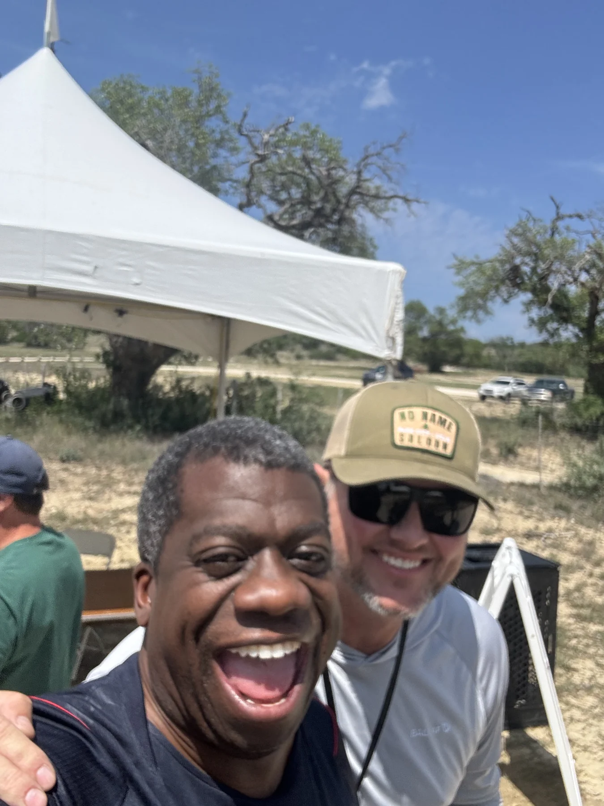

ONE PLACE. YOUR KIND OF WEEKEND.
COME ALIVE
OUT HERE.
Chase a trail. Find a song.
Make room for a little wonder.
OPEN A MOMENT ↘
Explore Cale’s vision for 2027. Campaign images bring the possibilities to life; the final program, availability and bookings are still to come.

GORDON + CALE / GRYPHUS, APRIL 2026THE BEST PART IS WHO YOU FIND.
GOOD PEOPLE.
WIDE OPEN
POSSIBILITIES.
Gryphus is personal. It grows from people bringing their friends, their music, and their love of being outside.
Walt Zink
Music curator
Cale Yarborough
Executive producer
Gordon introduced Walt and Cale in 2023. Before Gryphus 2026, Cale picked out a campsite for Gordon with a view of the stars. This is what making room for your people looks like.
A PERSONAL INVITATIONMAKE A LITTLE SPACE FOR YOURSELF.
YOUR WEEKEND,
TAKING SHAPE.
Save the experiences that call to you.
Bring your people into the picture.
What’s your first stop?
Open an experience above and save it here.
Your list stays on this device. Saving an experience is a wish list, not a reservation.
April 30 to May 2, 2027
Tickets + what’s included +
2027 passes, prices, fees and inclusions have not been announced. Save the dates now; use the official festival site for booking news.
Official festival updates ↗Camping + getting here +
Festival camping options, arrival instructions and facilities will be confirmed with the program. The ranch’s everyday camping and riding terms are separate from festival admission.
Trails + what to bring +
The ranch requires a helmet when riding. Bring water and equipment suited to your activity. Check the ranch’s current guidance and the festival’s eventual route and weather information before setting out.
Ranch guidance ↗Access + family information +
Age policies, accessible routes, support arrangements and family facilities still need event-specific confirmation. These details will help you decide which experiences work for you.
IT ALREADY HAPPENED ONCE.
WHO PLAYED
LAST YEAR.
Gryphus 2026 ran April 24 to 26 at the same ranch. Nine acts, three days, roots and soul and brass and a lot of dust. This is the record, not a promise: the 2027 lineup has not been announced.
FRIAPR 24
- 3:00 Silas Lowe
- 6:00 Delvon Lamarr Organ Trio
- 8:00 Delvon Lamarr Organ Trio
SATAPR 25
- 11:00 The Peterson Brothers
- 2:00 Cilantro Boombox
- 4:30 Los Juanos
- 7:00 Ikebe Shakedown
SUNAPR 26
- 11:00 The Redbearded Strangers
- 2:00 Rat King Cole
- 5:30 Thee Heart Tones
In 2027 the music runs later: sets through the evening to 10. Whether anything happens after that is not on the poster.
DIFFERENT PURSUITS. A STRONGER COMMUNITY.
GRYPHUS2027
Music. People. Trails.
A brighter tomorrow.